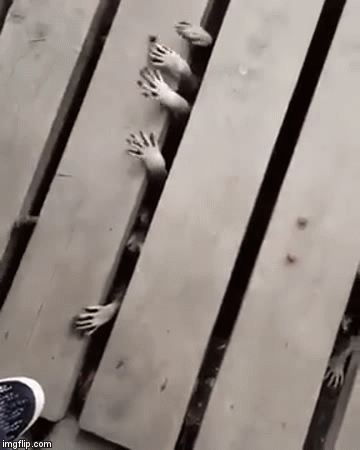

About the author:
Marina is a Scripps senior, majoring in Computer Science.
| Similar animals: | ||
|  | ||
| this is here for even spacing. I want to make sure it has enough words to work. It needs two lines to make sure it's long enough. |
In case you wanted to know the exact taxonomy of raccoons:
Reasons I made this website:

Marina is a Scripps senior, majoring in Computer Science.